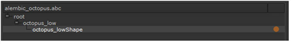

您可以从 Alembic 文件导入相机 ( 。Abc 文件格式) 转换为 核武器 场景。在进口期间, 核武器 允许您通过使用导入对话框来控制 Alembic 场景中的哪些节点被加载。如果 Alembic 文件中只有一项，它将自动加载。
有关 Alembic 的更多信息，请参见 Http://code.google.com/p/alembic/
提示:
除了相机之外，还可以从 Alembic 文件导入网格 (或转换为网格的 NURBS 曲线/面片曲面) 、点云和变换。
了解如何在 Alembic 中导出文件 (
。Abc
) 格式，请参阅
导出几何图形、摄影机、灯光、轴或点云
欲了解更多信息。
| 1。 | 单击 图像 > 阅读 或按 R 在节点图上。 |
的 读取文件 (s) 对话框显示。
| 2. | 选择要从文件位置导入的 Alembic 文件，然后单击 打开 . |
将显示 Alembic 导入对话框。默认情况下，打开 “导入” 对话框时，将在场景图中选择所有项目，如下所示:
选定的父项用黄色圆圈表示，选定的子项用黄色条表示 (当您在列表中选择它们时，这些子项会变成橙色)。未选择的项目旁边没有指示器。
| 3. | 要导入特定项目，必须首先通过单击黄色圆圈来取消选择根项目。取消选择根和任何子项。然后，通过单击圆圈所在的空白区域，在场景图中选择特定项目，如下所示: |

或者，您可以在项目上单击鼠标右键并选择:
• 选择作为父 -选择此项目并使其成为其他项目的父项。这允许您创建一个单独的 核武器 下一步中此项目 (以及其下的任何子项目) 的节点。
• 选择为子级 -选择此项目并使其成为树中最近的父项目的子项目。
• 取消选择 -取消选择此项目 (即不从场景导入)。
也可以通过按选择多个项目 Ctrl / Cmd 或 转变 同时点击它们。
| 4. | 执行以下操作之一: |
• 单击 创建所有功能于一身的节点 创建一个 核武器 所有选定项的节点，无论这些项是作为父项还是子项选定。
• 单击 将父节点创建为单独的节点 创建一个 核武器 树中每个父项 (黄色圆圈) 的节点。此节点包含父项下的所有子项 (黄色条)。
核武器 根据您选择的要从场景导入的内容，根据需要创建 ReadGeo 、 Camera 和 Axis 节点。
| 5. | 在相机节点上，可以调整以下内容: |
• 从 动画堆栈 下拉菜单中，选择是否要用的 。Abc 文件。Alembic 文件支持在一个文件中进行多次接收。
• 从 节点名称 下拉菜单中，选择要从 。Abc 文件。
• 在 帧速率 字段中，定义一个帧速率 (每秒帧数) 来采样动画。使用这个比率，而不是在 。Abc 文件，检查 使用帧速率 .
• 如果要修改从导入的相机属性 。Abc 文件，取消选中 从文件中读取 在 相机 Tab 并进行必要的修改。只要 从文件中读取 如果未选中，则保留您的更改。
• 从中重新加载相机属性 。Abc 文件，确保 从文件中读取 选中并单击 重新加载 按钮上 文件 标签。
• 要使用查找向量和查看位置计算相机旋转值，请检查 计算旋转 。如果你不检查这个, 核武器 采用旋转通道, 。Abc 文件而不是计算一个新的。旋转值总是在查看目标时计算的。
提示: 要从 Alembic 文件中加载特定项目，还可以创建 ReadGeo 、 Camera 或 Axis 节点，检查 从文件中读取 ,然后单击上的文件夹图标 文件 选项卡浏览到 。Abc 文件。
|
|